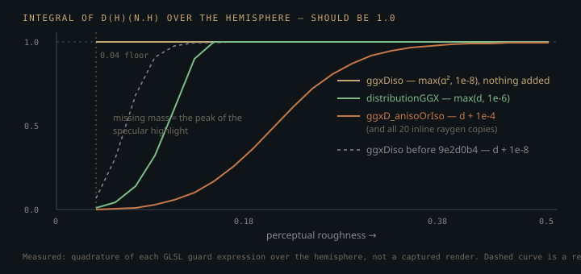

Monograph · Tree · ← Module hub · GGX implementation
materials
GGX implementation
D/F/G terms, Smith correlated, energy helpers.
The α convention every copy shares
This tree writes the isotropic GGX distribution out twenty-four times. Four of those copies sit behind a function name: `distributionGGX` in `brdf_ggx.glsl`, which only `deferred_lighting.frag` and `forward.frag` reach — through `evaluateBRDF`; `ggxD_anisoOrIso`'s isotropic branch and `ggxDiso` in `ggx_aniso.glsl`, `#include`d by the three path-tracer raygens and by `includes/diff/bsdf.glsl`, the differentiable renderer's BSDF, which calls `ggxDiso` for its specular lobe; and `D_ClearCoat` in `advanced_brdf.glsl`, a file no shader `#include`s. The other twenty are inline. Past bounce 0 the raygens stop calling `ggx_aniso.glsl` and paste the algebra straight into each NEE, env-MIS and pdf branch — six copies in `pt_raygen.rgen`, six in `pt_raygen_offline.rgen`, eight in `pt_raygen_realtime.rgen`.
The one thing all twenty-four agree on without qualification is the width parameter. Every one of them resolves the artist's perceptual roughness to α = roughness² — `ggxDiso` at its call site, the rest internally — and then squares α again inside the Trowbridge-Reitz denominator:
Here $\omega_h$ is the half-vector between view and light, $n$ the shading normal, and $\alpha$ the lobe width. $D$ is normalised so that $\int D(\omega_h)(n\cdot\omega_h)\,d\omega_h = 1$ over the hemisphere — the microfacets' projected areas must add back up to the macrosurface. That property is load-bearing, and it is the one this implementation loses. The rasteriser's copy:
return a2 / max(denom, EPSILON);shaders/includes/brdf/brdf_ggx.glsl:38and the copy the raygens call at bounce 0 and then re-type by hand at every bounce after:
return a2 / (3.14159265 * denom * denom + 0.0001);shaders/includes/material/ggx_aniso.glsl:37The double squaring is why a painted roughness of 0.1 is already a near-mirror: α = 0.01, α² = 10⁻⁴. Both stacks also floor roughness at 0.04 before shading — the path tracer in `pt_closesthit.rchit`, the rasteriser in `initBRDFSurface` — so α never falls below 1.6 × 10⁻³.
surface.roughness = max(roughness, 0.04);shaders/includes/brdf/brdf_common.glsl:127The α agreement is not cosmetic — a sampler whose α drifts from the D it importance-samples renders a plausible-looking image with a quietly biased estimator — and `ggx_aniso.glsl` spells the constraint out.
// convention here (alpha = roughness^2) MATCHES ggxD_anisoOrIso's isotropicshaders/includes/material/ggx_aniso.glsl:62Five lines later the same comment block used to overreach. `ggxDiso` — the D behind the realtime raygen's VNDF pdf — was introduced as "numerically identical" to `ggxD_anisoOrIso`'s isotropic branch. The α convention did match; the guard did not. The branch adds 10⁻⁴ to its denominator, `ggxDiso` added 10⁻⁸, and by the quadrature below that factor of 10⁴ was the difference between retaining 2.7% and 91% of the distribution's mass at roughness 0.1. Both citations below are pinned to `9e2d0b4`, the last revision that carried those lines:
// identical to ggxD_anisoOrIso's isotropic branch).shaders/includes/material/ggx_aniso.glsl@9e2d0b4:67return a2 / (3.14159265 * denom * denom + 1e-8);shaders/includes/material/ggx_aniso.glsl@9e2d0b4:71`ggxDiso`'s 10⁻⁸ is gone. The guard is now a floor on **α** rather than a term added to the denominator: `max(α², 10⁻⁸)`, i.e. α ≥ 10⁻⁴, which is the roughness 0.01 floor `pbr_unpack.glsl` already applies. Nothing is added to the denominator at all, so the function is exact Trowbridge-Reitz at whatever width it was handed and integrates to 1 at *every* roughness — the flat curve in the figure below.
float a2 = max(alpha * alpha, 1e-8);shaders/includes/material/ggx_aniso.glsl:125return a2 / (3.14159265 * denom * denom);shaders/includes/material/ggx_aniso.glsl:127That widens the gap between the two functions rather than closing it, and the file now says so where a reader will hit it. It matters because the realtime raygen computes the *same* quantity — the specular BSDF sampler's VNDF pdf — on both sides of one MIS partition, and both sides must use the same D or the balance heuristic is evaluated with two different densities:
float Dpdf = ggxDiso(NdotH, roughness * roughness);shaders/rt/pt_raygen_realtime.rgen:680float pdfSpecMIS = smithG1GGX(NdotV, roughness * roughness) * Dpdf / (4.0 * NdotV + 1e-4);shaders/rt/pt_raygen_realtime.rgen:702The shaded value `spec` on that same branch still calls `ggxD_anisoOrIso`, because that is the D every existing reference render was made with. Only the density moved.
The visibility term that is not a geometry term
`geometrySmithCorrelated` is named for a G but returns a V. It is Heitz's height-correlated Smith term already divided by the Cook-Torrance denominator:
with $\omega_o$ the view direction, $\omega_i$ the light direction, and $G_2$ the joint masking-shadowing fraction. The two square roots are the code's `lambdaV` and `lambdaL`, and the leading 0.5 is where the factor of 4 went:
return 0.5 / max(lambdaV + lambdaL, EPSILON);shaders/includes/brdf/brdf_ggx.glsl:73Consequently the deferred specular is assembled as a bare triple product with no denominator at all:
return D * V_term * F;shaders/includes/brdf/brdf_ggx.glsl:105This is the sharpest edit trap in the file. Anyone who notices the "missing" Cook-Torrance denominator and restores $1/4(n\cdot\omega_o)(n\cdot\omega_i)$ divides twice: highlights come out four times too dim head-on and wrongly lifted at grazing angles — a change that reads as a plausible material tweak rather than a bug. The raygens keep the two apart, building an *uncorrelated* Schlick-k `G` and dividing by `4 * NdotV * NdotL + 0.001` explicitly in each NEE branch — a second additive epsilon inside the same expression.
A third arrangement lives in `ggx_aniso.glsl`. `smithG2overG1GGX` is written from the Smith Λ function rather than the square root above, and substituting $\Lambda=\tfrac{1}{2}\!\left(-1+\sqrt{1+\alpha^{2}\tan^{2}\theta}\right)$ into $1/(1+\Lambda_o+\Lambda_i)$ reproduces $2c_oc_i/(c_iS_o+c_oS_i)$ exactly — the same $G_2$ `geometrySmithCorrelated` computes. That is where the resemblance stops. It has exactly one call site in the tree, in the realtime raygen, as the VNDF estimator weight $f\cos/\text{pdf}=F\,G_2/G_1$ with the Fresnel factored out — not as a shading G.
specThroughput = F * smithG2overG1GGX(NdotV, NdotL, alpha);shaders/rt/pt_raygen_realtime.rgen:806`pt_raygen.rgen` and `pt_raygen_offline.rgen` never mention it. The two pipelines therefore do not share a masking-shadowing model: the rasteriser shades with height-correlated Smith, every raygen NEE branch shades with the uncorrelated Karis product.
Fresnel: an IBL approximation wired into direct lighting
`brdf_common.glsl` ships two Schlick Fresnels. The textbook one, with F90 fixed at 1, has no callers anywhere under `shaders/`. The one the deferred BRDF actually calls replaces F90 with `max(1 - roughness, F0)`:
return F0 + (max(vec3(1.0 - roughness), F0) - F0) * pow(saturate(1.0 - cosTheta), 5.0);shaders/includes/brdf/brdf_common.glsl:28At roughness 0.95 a dielectric's F90 collapses from 1.0 to 0.05, i.e. essentially to $F_0$: no grazing boost at all. This variant is normally an image-based-lighting device evaluated at $n\cdot\omega_o$, standing in for a pre-integrated reflectance; OHAO evaluates it per punctual light at $\omega_o\cdot\omega_h$.
F = fresnelSchlickRoughness(HdotV, F0, roughness);shaders/includes/brdf/brdf_ggx.glsl:103The rejected alternative is textbook Schlick with F90 = 1 — exactly what all three raygens use inline. Under a rasteriser that Fresnel gives a rough dielectric a bright white rim at grazing angles with nothing to cancel it: the inter-reflection that would swallow it is microfacet-scale transport the deferred pass never traces. Clamping F90 to 1 − roughness buys EEVEE-like edge behaviour at the price of a Fresnel that no longer matches the offline render, so a rough dielectric silhouette is dimmer in the deferred preview than in the path-traced frame.
The epsilon that eats the highlight
Those twenty-four D expressions guard against a vanishing denominator in four different ways, and only two of them are floors. `distributionGGX` floors the finished denominator, `max(π·denom², EPSILON)`, with EPSILON defined as 10⁻⁶.
#define EPSILON 1e-6shaders/includes/common/constants.glsl:59`ggxD_anisoOrIso`'s isotropic branch and all twenty inline raygen copies *add* 10⁻⁴. `ggxDiso` adds nothing — it floors α upstream instead, which is the one arrangement that costs no mass. `D_ClearCoat` guards nothing at all — harmless only because nothing includes the file it sits in.
return a2 / (3.14159265 * denom * denom);shaders/includes/material/advanced_brdf.glsl:43An additive term is not a floor — it never leaves the expression. At the lobe peak the true denominator is $\pi\,\text{roughness}^{8}$, which at the 0.04 roughness floor is about 2 × 10⁻¹¹: roughly five orders of magnitude under `distributionGGX`'s floor and seven under the added 10⁻⁴. For both guards that add, the guard rather than the GGX algebra sets the height of the highlight. A floor on α is a different kind of object: it substitutes a slightly wider — but still correctly normalised — lobe, so it moves *where* the energy sits without removing any.
Numerical quadrature of the shipped guards shows how far each truncation reaches. `ggxDiso` integrates to 1.000 at every roughness in the table — it truncates nothing. `distributionGGX` recovers full normalisation by roughness ≈ 0.16, with 0.9% of the mass surviving at the 0.04 floor. The +10⁻⁴ expression — the one on every NEE branch of every raygen — does not recover until roughness ≈ 0.4, and at roughness 0.2 it retains only 37% of the distribution's mass (2.7% at roughness 0.1, 0.07% at the 0.04 floor). For scale, `ggxDiso` in its pre-`9e2d0b4` +10⁻⁸ form sat between the two: 91% at roughness 0.1, within 1% of full by 0.14, and 7% at the 0.04 floor.

Where it bites matters as much as how much. Take the raygen `PathTracer` binds by default:
const char* raygenSpv{"bin/shaders/rt_pt_raygen.rgen.spv"};ohao/render/rt/path_tracer.hpp:55D enters that file at nine sites: six BRDF evaluations — light NEE and env-MIS, at bounce 0 and again on both the specular and the diffuse chain — and three MIS pdfs. The truncation therefore dims specular NEE at every bounce along both chains. What it never touches is indirect specular throughput, which is a bare metal tint:
specThroughput = mix(vec3(1.0), albedo, metallic);shaders/rt/pt_raygen.rgen:529The ray it weights is not a mirror ray, though. The comment calling the dual-ray design deterministic is about lobe *selection* — bounce 0 traces a specular and a diffuse child instead of choosing one — not direction. Above roughness 0.01 the reflection is perturbed by a roughness-scaled cosine-hemisphere jitter, with a stochastic fallback below the horizon:
vec3 jitVec = cosineHemisphere(reflected, jitU) * roughness;shaders/rt/pt_raygen.rgen:519reflected = cosineHemisphere(N, fallbackU);shaders/rt/pt_raygen.rgen:523Its MIS pdf is where D re-enters the chain:
specLastBsdfPdf = pdf_spec; // pure GGX PDF (no lobe-mix factor in dual-ray)shaders/rt/pt_raygen.rgen:540So a chrome sphere still reflects the environment at full strength. What shrinks is the direct-light highlight on smooth surfaces, and the MIS weight deciding how much environment radiance the specular ray is allowed to keep.
The `+ 0.0001` in the raygens' D is not a division guard; it is an undeclared highlight clamp on smooth materials. `kOfflineRTSettings` turns firefly clamping off outright, yet a roughness-0.2 surface loses roughly two thirds of its NEE specular before any clamp logic runs. {{cite ohao/render/rt/rt_settings.hpp ".enableFireflyClamp = false,"}} There is a free repair, and `ggxDiso` has taken it: floor **α** instead of guarding the denominator, and the expression stays exactly normalised at every roughness. What is not free is applying it here. Flooring the *denominator* — what `distributionGGX` does — still loses 99.1% of the mass at the 0.04 roughness floor, and the 10⁻⁸ `ggxDiso` used to add left 93% missing there. Any of these changes every existing smooth-material reference render, which is why `ggxD_anisoOrIso` keeps its 10⁻⁴: it is the D the offline raygen — and therefore the golden-image corpus — was baselined against.
The anisotropic branch and the normalisation it drops
The anisotropic path of `ggxD_anisoOrIso` builds an elliptical GGX from a tangent frame projected off world-up. The standard Burley form is
with $T,B$ the tangent and bitangent and $\alpha_x,\alpha_y$ the two lobe widths. The shipped code divides $(T\cdot\omega_h)^2$ by `rT` rather than by `rT²`, which makes `rT` behave as $\alpha_x^{2}$ —
float d = (TdotH * TdotH / rT) + (BdotH * BdotH / rB) + NdotH * NdotH;shaders/includes/material/ggx_aniso.glsl:53— while the normalisation factor `π·rT·rB` assumes `rT` is $\alpha_x$:
return 1.0 / (3.14159265 * rT * rB * d * d + 0.0001);shaders/includes/material/ggx_aniso.glsl:54Both readings cannot hold. Driving anisotropy toward zero and integrating the shipped expression gives $\int D(\omega_h)(n\cdot\omega_h)\,d\omega_h = 1/\text{roughness}^{2}$ rather than 1 — measured as 4.0 at roughness 0.5 and 25 at roughness 0.2 — and the lobe carries the width of α = roughness instead of roughness². The branch therefore does not degenerate into the isotropic branch it sits next to; it steps to a wider, brighter lobe the moment anisotropy crosses the 0.001 gate. Because the same D feeds both the NEE specular and the specular MIS pdf, enabling anisotropy over-brightens the highlight *and* de-normalises the pdf in the same direction.
This never fires in a default render. The global override defaults to zero and only `env_demo`'s `--aniso=` flag raises it, so every shipped reference image is on the isotropic branch.
float anisotropyStrength{0.0f};ohao/render/rt/rt_settings.hpp:29One reading trap in the same file: its header comment says the tangent frame comes from Frisvad's basis, while `worldUpTangent` — the function the D term actually calls — was written specifically to reject Frisvad. Trust the function.
What is actually reachable
`brdf_common.glsl` and `brdf_ggx.glsl` define twenty functions between them; the deferred and forward fragment shaders reach nine. Four of the eleven unreachable ones still have their math shipping under no name at all. `geometrySchlickGGX` and `geometrySmith`, its sole caller, are the `(roughness+1)²/8` remap inlined in every NEE branch of all three raygens. `fresnelSchlick` — textbook Schlick with F90 = 1 — is written out by hand in those same branches and in `ssr.comp`, minus the `saturate`. `lambertianDiffuse` is the `albedo/π` sitting a few lines under each of those Fresnels.
vec3 fresnel = F0 + (1.0 - F0) * pow(1.0 - NdotV, 5.0);shaders/postprocess/ssr.comp:100vec3 diff = kD * albedo / 3.14159;shaders/rt/pt_raygen.rgen:411Five of the remaining seven are dead in both senses: `f0FromIOR`, `envBRDFApprox`, and the uncorrelated Smith trio, whose $(2\,n\cdot\omega)/(n\cdot\omega+\sqrt{\cdot})$ arrangement appears nowhere else under `shaders/`.
float smithG(float NdotV, float NdotL, float roughness) {shaders/includes/brdf/brdf_common.glsl:72The last two are one-line compositions the fragment shaders open-code rather than call: `getRoughnessMipLevel` as a literal `roughness * 9.0`, `evaluateBRDFWithShadow` as a multiply by `1 - shadow`.
float lod = roughness * 9.0; // assuming 10 mip levels for 1024x512shaders/core/deferred_lighting.frag:281Prune by grepping the formula, not only the name — the twenty-four-copy count at the top of this page is what that grep returns.
Contracts
- `geometrySmithCorrelated` returns a visibility term with $1/4(n\cdot\omega_o)(n\cdot\omega_i)$ folded in, so `evaluateSpecularBRDF` must return `D * V * F` with no denominator. Adding one divides twice.
- Both stacks floor roughness at 0.04 before shading. Lowering that floor does not sharpen the highlight — it drives D further into its epsilon guard.
- `ggxD_anisoOrIso`, `ggxDiso` and `smithG1GGX` must all keep α = roughness². Changing one without the others biases the MIS estimator silently.
- `ggxD_anisoOrIso` and `ggxDiso` are *not* the same D, and have not been since `9e2d0b4`. Anywhere one quantity is computed on both sides of a MIS weight, the same one must be called on both sides — `pt_raygen_realtime.rgen`'s env-IS `pdfSpecMIS` and its VNDF `specLastBsdfPdf` are exactly that pair, and both call `ggxDiso`.
- The three *shipped* isotropic D guards — 10⁻⁶ floored on the denominator, 10⁻⁴ added to it, and an α floor that adds nothing — normalise at roughness 0.16, 0.4, and everywhere, respectively. They are not interchangeable, and editing one changes which existing renders it matches.
- The anisotropic branch is not energy-matched to its own isotropic branch and is off by default. `--aniso=` renders are not radiometrically comparable to isotropic ones.
- The deferred Fresnel clamps F90 to `1 - roughness`; the raygens do not. Rough dielectric silhouettes will not match between preview and offline render.
Source files
shaders/includes/brdf/brdf_ggx.glslshaders/includes/material/ggx_aniso.glslshaders/includes/brdf/brdf_common.glslshaders/includes/material/ggx_aniso.glsl@9e2d0b4path noteshaders/rt/pt_raygen_realtime.rgenshaders/includes/common/constants.glslshaders/includes/material/advanced_brdf.glslohao/render/rt/path_tracer.hppshaders/rt/pt_raygen.rgenohao/render/rt/rt_settings.hppshaders/postprocess/ssr.compshaders/core/deferred_lighting.fragParent hub for the full pipeline narrative; this page is the file-level design unit. Sitemap · hover glossary terms anywhere.